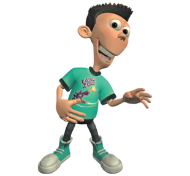
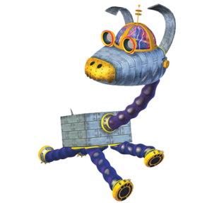
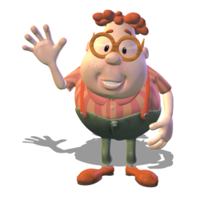

Шин
Шин одержим супергероем по имени "Ультра Лорд"." Он собирает все фигурки Ультра-Лорда, карты и ежедневно цитирует его. Иногда Шин может быть несколько бесчувственным и упускать общую картину вещей. Шину 13 лет (он несколько раз сдерживался, как упоминалось в "Операции Реактивного слияния"). Несмотря на поклонение Ультра Лорду, он на самом деле заботится о своем отце и Либби больше всего.
Несмотря на гиперактивность и особенности Шина, Он на самом деле показал себя очень полезным, способным дать научное понимание или предложить решение, хотя и необычное. За то время, что они провели на корабле Старьевщика, мозг мальчика был отсканирован, мозг Шина оказался значительно больше, чем у Карла. Однако в большинстве случаев, когда Шин собирается показать свой СПИД, он часто тормозится своей низкой концентрацией внимания и безумным поведением, утверждая, что саботировал свой собственный мозг с помощью телевизора и сахара. В Лиге злодеев Шин показал себя сострадательным человеком; он верил , что в Ти есть доброта, и оказался прав.

Карл
Карл Уизер это очкастый тупоголовый мальчишка и один из лучших друзей Джимми. У Карла и его родителей есть множество аллергических реакций, иногда даже на вещи, которые не способны вызвать аллергические реакции. Он страстно любит лам, и его страсть к ним часто используется в качестве бегущего кляпа на протяжении всей серии. Он также немного труслив и влюбился в маму Джимми, как показано во множестве эпизодов. Его влюбленность в Джуди становится настолько сильной, что он проявляет интерес к уничтожению мужа Джуди и отца Джимми, Хью Нейтрона. Внеземной персонаж по имени Доппи, похожий на Карла, является главным героем в фильме.
Карл довольно жаден, любит пожирать не только еду, но и такие предметы, как игрушки и газеты. Когда его родители расширили свою кабельную линейку, Карл обнаружил, что сосредоточился на канале, посвященном ламам, и шоу о супергерое по имени Лама Бой, Супер Герой. С тех пор он обожает лам, дошел до того, что вступил в фан-клуб, Общество любви лам (которое он, вероятно, создал, поскольку оказался единственным его членом). Однажды он даже превратился в ламу. У него аллергия почти на все и астма. Карл часто неосознанно дает Джимми свои блестящие идеи.
Годдард
Годдард, может быть, и одно из безумных изобретений Джимми, но для него он настоящий пес. Он партнер Джимми по лаборатории, его любимое изобретение и лучший друг. Годдард всегда рядом, чтобы помочь Джимми, когда он в беде, и всегда предан.
Годдард может говорить голосом Джимми, вероятно, через записи. Он ладит с Карлом, Шиноми Ником , так как они лучшие друзья Джимми. Он, кажется, не любит Хамфри, потому что они оба собаки, что дает естественное чувство соперничества. И Годдард почти не общается с Синди, Либбии Бриттани.
В специальном кроссовере "Jimmy Timmy Power Hour" Тимми Тернер по глупости принял его за видеоигру в форме собаки, а затем вставил диск для жестокой игры, пока находился в режиме обновления. Тогда это приводит к тому, что Годдард-неистовый монстр, который терроризировал Ретровилль. К счастью, к концу спецоперации он пришел в норму.
Главная